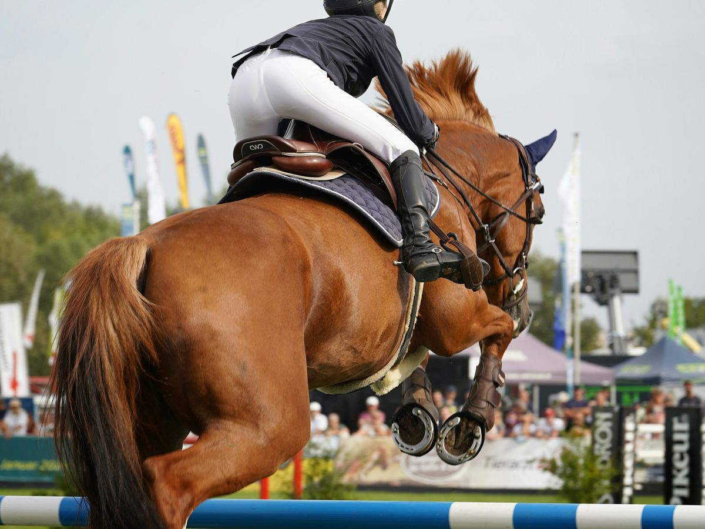

Emergent Cooperation in a Pandemic ↗
Can selfish multi-agent RL agents learn to share scarce medical resources? An impact reward cuts deaths 4–11% versus selfish baselines.

Research, teaching and coursework at Stanford, across multi-agent reinforcement learning, interpretability, computer vision and clinical NLP.
Research & projects
Can selfish multi-agent RL agents learn to share scarce medical resources? An impact reward cuts deaths 4–11% versus selfish baselines.
When can we trust AI explanations? A mechanistic audit of chain-of-thought in Llama-3-8B with logit lens and activation patching: the model commits to its answer in the last ~3 of 32 layers whether or not it reasons first.

Predicting showjumping outcomes from broadcast video with self-supervised representations, controlling for the venue confound.
A hybrid model that codes rare-disease phenotypes from free-text clinical notes by following the Human Phenotype Ontology hierarchy, and abstains when it is unsure. It beats PhenoBERT on precision and F1 on the GSC+ and ID-68 benchmarks. With Riya Narain.
Personalized menstrual-health recommendations learned offline from wearable data with fitted Q-iteration and behavior cloning.
Can Q-learning learn better A* heuristics for imperfect mazes with loops?
Teaching
Lead weekly lab sections for Stanford's systems programming course, teaching C, memory, and debugging with gdb and Valgrind to 30 students.
Graduate coursework
| Course | Title | Grade |
|---|---|---|
| CS224N | NATURAL LANGUAGE PROCESSING WITH DEEP LEARNINGDiyi Yang; Tatsunori Hashimoto | A |
| CS238 | DECISION MAKING UNDER UNCERTAINTYMykel Kochenderfer | A |
| CS309A | CLOUD COMPUTING SEMINARTimothy Chou | S |
| STATS202 | STATISTICAL LEARNING AND DATA SCIENCERobert Tibshirani | A |
| CS199 | INDEPENDENT WORKJay Borenstein | A |
| CS224R | DEEP REINFORCEMENT LEARNINGChelsea Finn | A |
| CS281 | ETHICS OF ARTIFICIAL INTELLIGENCECarlos Guestrin | A |
| CS146S | THE MODERN SOFTWARE DEVELOPERMihail Eric; Tianyu Hua; Vijay Daita | In progress |
| CS177 | INTRODUCTION TO PRODUCT MANAGEMENT WITH AIChristina Wodtke | In progress |
| CS183E | EFFECTIVE LEADERSHIP IN HIGH-TECHJocelyn Goldfein; Mauria Finley | In progress |
| CS224V | AGENTIC AIMonica Lam | In progress |
Undergraduate coursework
| Course | Title | Grade |
|---|---|---|
| CS124 | FROM LANGUAGES TO INFORMATIONDan Jurafsky | A |
| CS151 | LOGIC PROGRAMMINGMichael Genesereth | A |
| CS111 | OPERATING SYSTEMS PRINCIPLESNick Troccoli | A |
| CS148 | INTRODUCTION TO COMPUTER GRAPHICS AND IMAGINGRon Fedkiw | A |
| CS157 | COMPUTATIONAL LOGICMichael Genesereth | A+ |
| CS107 | COMPUTER ORGANIZATION AND SYSTEMSJerry Cain | A |
| CS278 | SOCIAL COMPUTINGMichael Bernstein | A+ |
| ENGR76 | INFORMATION SCIENCE AND ENGINEERINGAyfer Ozgur | A |
| CS194W | SOFTWARE PROJECT (WIM)Jay Borenstein | A+ |
| CS205L | CONTINUOUS MATHEMATICAL METHODS WITH AN EMPHASIS ON MACHINE LEARNINGRon Fedkiw | A+ |
| CS224G | APPS WITH LLMS INSIDEJan Jannink; John Whaley | A+ |
| CS131 | COMPUTER VISION: FOUNDATIONS AND APPLICATIONSJuan Carlos Niebles Duque | A |
| CS247G | DESIGN FOR PLAYChristina Wodtke | A+ |